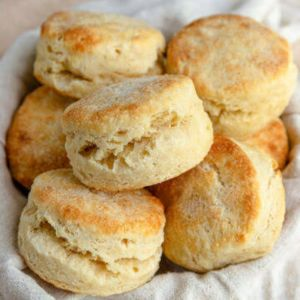

Time: 40 minutes Yield: Serves 10 people
We wanted to combine the ease of cream biscuits (which eliminate the step of cutting cold fat into dry ingredients) with the ease of drop biscuits (which skip the rolling and cutting) to create the easiest biscuits ever. But the most obvious solution—increasing the amount of cream in a cream biscuit recipe until the dough had a droppable consistency—produced biscuits that spread too much and were greasy. Instead of increasing the amount of cream, we found a way to increase its fluidity: We heated it to between 95 and 100 degrees, which melted the solid particles of butterfat dispersed throughout. This made a dough that was moister and scoop-able but that rose up instead of spreading out in the oven, producing biscuits that were appropriately rich and tender but not greasy.
Before You Begin
These biscuits come together very quickly, so in the interest of efficiency, start heating your oven before gathering your ingredients. We like these biscuits brushed with a bit of melted butter, but you can skip that step if you're serving the biscuits with a rich accompaniment such as sausage gravy.
Make Ahead:Biscuits can be stored in zipper-lock bag at room temperature for up to 24 hours. Reheat biscuits in 300-degree oven for 10 minutes.
Find more easy Thanksgiving recipes on our Homepage